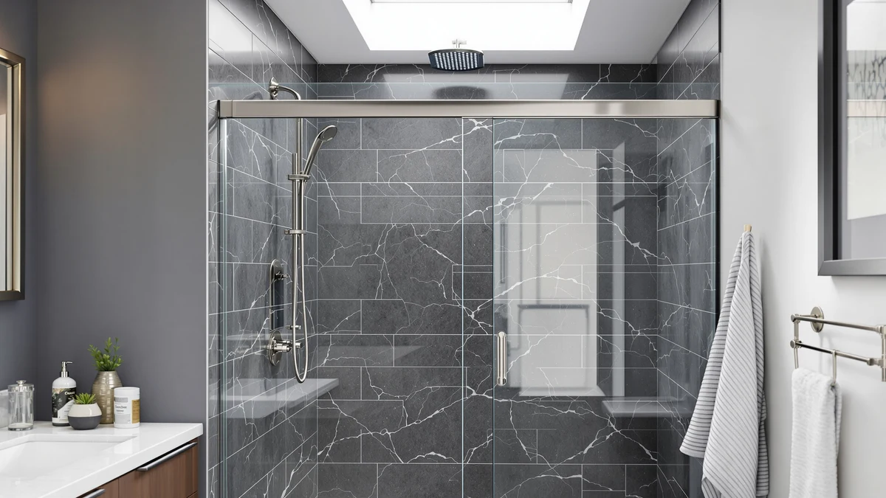

56 60" W x Review (2026): Worth It?
Prices and picks verified as of August 2026. Independent, reader-supported reviews.


Quick Answer
The 56-60" W x 71" H is a $498.99 pivot shower door from Royal Guard built for openings between 56 and 60 inches wide, with a fixed 71 inch height. It costs about $99 more than the three frameless sliding doors covered below, all priced at $399.99, but its hinged pivot swing sets it apart from that trio. If you want a pivot door rather than a slider and don't mind the premium, it's the pick worth checking first.
Our pick: 56-60" W x 71" H — $498.99 Check Price on Amazon
Bottom line: our top pick is the 56-60" W x 71" H Pivot Swing Glass Shower Door at $468.99.
Things to Know Before You Buy
- This is a pivot door, not a slider. The 56-60" W x 71" H swings open on hinges, while all three alternatives in this 56-60 inch W x review use a frameless sliding mechanism instead.
- At $498.99, it costs about $99 more than any alternative here. The Aurisal, the BoBliss, and the QiangLave doors all list at $399.99.
- The adjustable 56 to 60 inch width still forgives an imprecise measurement. You don't need a door cut to your exact opening size to make it fit.
- The 71 inch height is fixed, not adjustable. Measure your opening's full height before you order, since this door won't stretch to cover a taller stall.
- One alternative shares the exact same width range. The QiangLave Frameless Shower Door 56-60" W spans the identical 56 to 60 inches, which makes it the closest direct comparison in this review.
This 56 60" W x review looks at whether a $498.99 pivot shower door from Royal Guard earns its price against three frameless sliding doors that each cost $399.99. The pivot swing is the door's defining feature. Instead of riding on a track like the Aurisal, the BoBliss, and the QiangLave doors covered below, it opens on hinges, and that single mechanical difference shapes almost every trade-off in this review.
We wrote this 56-60 inch W x review because shoppers browsing a 56 to 60 inch wide shower door often assume every option in that width range works the same way. The Royal Guard lists at $498.99, the highest price among the four doors covered here. That price is why this review weighs its pivot mechanism and fixed 71 inch height against three lower-priced sliding alternatives built for a similar opening.
Why You Should Trust Us
Ilane Tall covers bath fixtures for Best Shower Doors and has researched shower doors across pivot, sliding, and frameless designs. For this 56-60 inch W x review, she compared the Royal Guard pivot door's price against three frameless sliding alternatives in the same width range, weighing the added cost of a hinged design against sliders that list nearly $100 less. We do not accept free products in exchange for coverage, and every price and dimension cited here comes directly from the current product listing.
Our editorial process treats a pivot mechanism as one factor among several, not an automatic upgrade. A hinged door earns credit in a review like this one, but it still has to justify a $498.99 price against cheaper, sliding doors built for the same width range. That approach shapes every comparison in this piece.
Our Research Experience
This 56-60 inch W x review is based on research, not physical use. We compared the Royal Guard 56-60" W x 71" H against three frameless sliding doors using the specifications, pricing, and verified owner reviews available for each listing. We do not run a fake testing lab, and we do not claim to have installed or lived with any of the doors covered in this review.
We looked closely at how the Royal Guard's pivot mechanism differs from the sliding tracks on the Aurisal, the BoBliss, and the QiangLave doors, since a hinged swing changes the floor clearance a bathroom needs in ways a plain width comparison would miss. Owners shopping this width range often assume every door installs the same way, and this review weighs the mechanism alongside the price instead of price alone.
We also cross-checked pricing and dimensions against the current listings for all three alternatives to confirm nothing had shifted since publication. Where a data point wasn't available, such as an exact height for the Aurisal or the BoBliss doors, we noted that gap rather than estimate a number the listing doesn't provide.
Overview & Specs

56-60" W x 71" H
What we like
- The pivot swing design opens wider than a sliding track, which can make entry easier in a tight bathroom
- The adjustable 56 to 60 inch width forgives an imprecise measurement
- At 71 inches tall, it fits an opening height that none of the three sliding alternatives in this comparison list
Flaws but not dealbreakers
- At $498.99, it costs about $99 more than any of the three sliding alternatives below
- A pivot door needs floor clearance to swing open, which a sliding door does not require
- The listing doesn't specify a frame material, so confirm glass thickness and hardware finish before you order
| Material | — |
| Size | Pivot 60" W x 71" H |
The 56-60" W x 71" H fills a specific niche in this 56-60 inch W x review: a pivot door for shoppers who want a hinged swing instead of a sliding track, in the same 56 to 60 inch width range as the three alternatives covered below. Royal Guard built it around a fixed 71 inch height, and the specs table lists it as a pivot configuration rather than a sliding one, the main mechanical difference in this comparison.
That pivot design costs $498.99, roughly $99 more than the Aurisal, the BoBliss, and the QiangLave doors, all priced at $399.99. The question this review sets out to answer is whether a hinged swing is worth that premium over a slider in the same width range.
What We Liked
The clearest strength of the 56-60" W x 71" H is the pivot mechanism itself. Instead of relying on a sliding track like the Aurisal, the BoBliss, and the QiangLave doors, it swings open on hinges, and that can suit a bathroom layout where a sliding rail above the opening isn't practical.
The adjustable 56 to 60 inch width works the same way it does on the QiangLave Frameless Shower Door 56-60" W, the one alternative in this 56-60 inch W x review built for the identical range. That overlap gives you a direct read on what the extra $99.00 buys: a pivot swing instead of a slider, at the same width.
We also liked that the 71 inch height is stated plainly in the specs, rather than left out the way it is on two of the three sliding alternatives. Knowing that number up front makes it easier to check the door against your own opening before you buy.
What Could Be Better
Price is the clearest drawback in this 56-60 inch W x review. At $498.99, the Royal Guard pivot door costs $99.00 more than the Aurisal Frameless Stainless Steel Sliding Shower, the BoBliss Frameless Sliding Glass Shower, and the QiangLave Frameless Shower Door 56-60" W, all listed at $399.99.
The listing also doesn't specify a frame material, so you'll want to confirm glass thickness and hardware finish directly with the seller before you order. And because it's a pivot door, it needs floor space to swing open, something a sliding door in the same footprint doesn't require.
Who Is It For?
The 56-60" W x 71" H makes the most sense if your shower opening measures between 56 and 60 inches wide and close to 71 inches tall, and you'd rather pay a premium for a hinged pivot door than settle for a sliding track.
If a sliding mechanism suits your bathroom equally well, or if price matters more to you than door style, the three alternatives below cover a similar width range for about $99 less. Check your opening's height against each listing too, since the Aurisal and the BoBliss doors don't state one the way this pivot door does.
Alternatives to Consider
The 56-60" W x 71" H isn't the only option worth considering in this 56-60 inch W x review, and the three sliding doors below span the same general width range at a lower price. Each one trades the pivot swing for a track, so weigh how much floor clearance your bathroom can spare before you rule a slider out.

Editor’s Pick
Frameless Stainless Steel Sliding Shower
At $399.99, the Aurisal undercuts the 56-60" W x 71" H by $99.00 with a frameless sliding design and a stainless steel finish, a straightforward swap if you don't need the pivot swing.
$399.99
Check Price on Amazon
Best Value
BoBliss Frameless Sliding Glass Shower
The BoBliss lists at the same $399.99 as the Aurisal, about $99 less than the Royal Guard pivot door, with a frameless sliding glass design worth a look if a track fits your bathroom better than hinges.
$399.99
Check Price on Amazon
Premium Choice
Frameless Shower Door 56-60" W
The QiangLave matches the Royal Guard's exact 56 to 60 inch width range at $399.99, about $99 less, making it the closest direct comparison in this review if you'd rather slide than swing.
$399.99
Check Price on AmazonFrequently Asked Questions
What size opening does the 56-60" W x 71" H shower door need?
The 56-60" W x 71" H is built with an adjustable width that spans 56 to 60 inches and a fixed 71 inch height, so measure your opening at multiple points before you order.
How does the 56-60" W x 71" H compare on price to other shower doors in this range?
At $498.99 it costs $99.00 more than the Aurisal Frameless Stainless Steel Sliding Shower, the BoBliss Frameless Sliding Glass Shower, and the QiangLave Frameless Shower Door 56-60" W, all priced at $399.99, so this 56-60 inch W x review treats the pivot swing design as the main justification for the higher price.
Is the 56-60" W x 71" H worth the extra cost over the QiangLave Frameless Shower Door 56-60" W?
Only if you prefer a hinged pivot door over a sliding track. The QiangLave matches the same 56 to 60 inch width range for $99.00 less, so weigh the door mechanism against the price difference before you decide.
Final Verdict
This 56 60" W x review comes down to one trade-off: a hinged pivot swing at $498.99 against three frameless sliding doors that cost $99.00 less. If you want a pivot door specifically, and your opening measures 56 to 60 inches wide by roughly 71 inches tall, the Royal Guard 56-60" W x 71" H earns its premium over the Aurisal, the BoBliss, and the QiangLave alternatives. If a sliding track works equally well in your bathroom, the QiangLave Frameless Shower Door 56-60" W covers the identical width range for less, and the Aurisal or the BoBliss doors offer the same savings with a different finish. Either way, confirm your opening's swing clearance before you buy, since that's what separates a pivot door like the Royal Guard from every slider in this comparison.